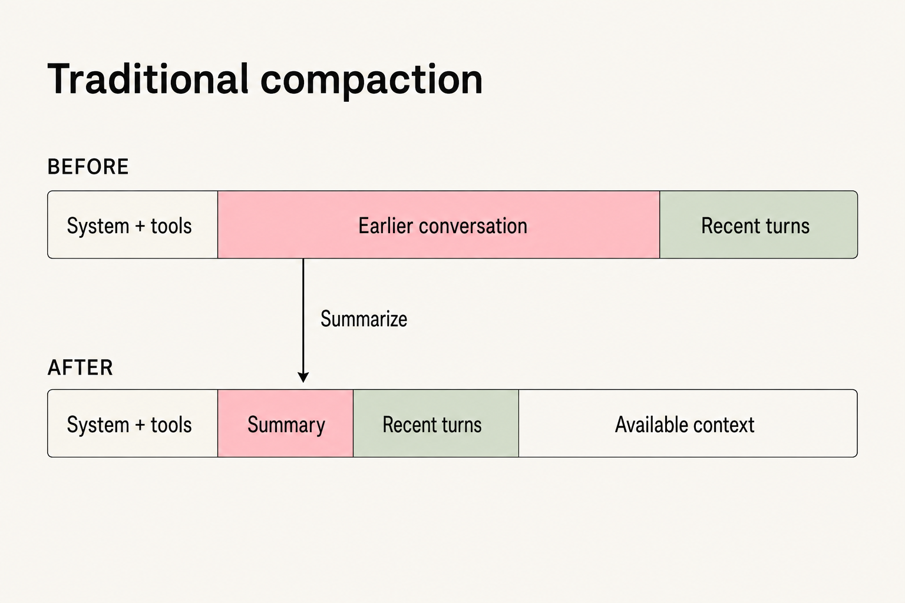
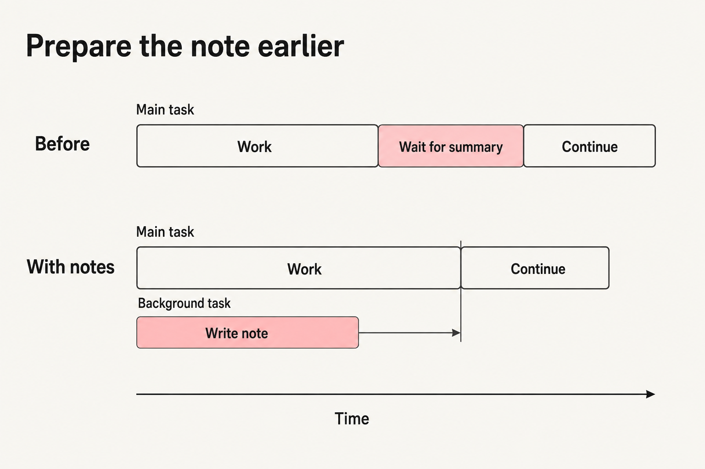
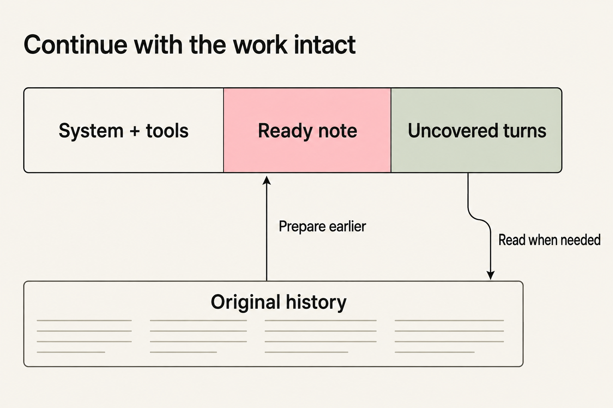

When working with an agent on a long task, we often ask it to write a note before starting a new conversation: what it is doing, how far it has got, and what remains unfinished. That note gives the next conversation somewhere to begin.
While building context compaction in Wuu, we kept coming back to this habit. If the model can already prepare a handover, could that become part of the default compaction flow?
How traditional compaction works
A model request starts with foundational material such as the system prompt and tool schemas, followed by the growing conversation and tool results. As the context approaches its limit, the harness preserves the foundational material and recent turns, asks the model to summarize the older conversation in between, and assembles a new context:

The recent work keeps its detail. Earlier material travels forward as a summary, leaving room for the task to continue.
The harness monitors context capacity and triggers compaction at a predefined point, making room for the next request while the model focuses on the task.
Let the model help choose the handover
The harness uses remaining capacity to choose when to compact. The task also has natural handover points, such as completing an investigation or verifying a set of changes. Recognizing them requires understanding the work in progress.
The model doing the work has that context. As its capabilities improve, it should be able to help decide when to pause, organize the work, and move into a fresh window. We want context management to develop alongside those capabilities.
Our experience with handover notes suggested a place to start. Leaving the objective, key decisions, and next steps at a suitable point in the task resembles an ordinary handover more closely than interrupting work only when the window is almost full.
The complication with BYOK
Implementation brought the differences between models into focus. Wuu is a bring-your-own-key application, so users connect models with different capabilities and training. Some can maintain notes and initiate fresh windows themselves; others need the harness to prompt and trigger the handover.
To support those models, we kept the harness in control of the timing and moved note preparation earlier.
Move the waiting into the background
Previously, work reached the compaction point, stopped while a summary was written, and then resumed. If that summary would be needed, could we start preparing it while the main conversation was still working?
We reuse the current conversation’s history in a background fork. Once enough context has accumulated, the fork turns a portion of the conversation into a note. The main task continues, while later background updates combine the existing note with new material.
At the compaction point, Wuu assembles the prepared note and the conversation it has not yet covered:
system prompt + tool schemas + note + uncovered conversation
When the note is ready, the serial wait at that point disappears. Summarization overlaps with the main task, reducing end-to-end latency. The transition picks up the prepared note and lets the work continue.

The main conversation keeps advancing while the note is written, so all uncovered progress travels into the new context. If the note is not ready, or the assembled context still cannot fit, Wuu uses the original compaction flow.
Keep the earlier conversation within reach
It is hard to know, while writing a note, which detail the next stage will need. A failure that seems unimportant now may become a useful clue later.
Wuu therefore retains the original conversation records and asks the note to include addresses for important history. In the new window, the model can read those addresses or search the old conversation. The note gets the work moving again; the original records supply details when needed.

This also gives us a path forward. As models become better at managing context, more of the note maintenance and handover timing can move to them. History storage, recovery, and window transitions can keep supporting the work as the handover process evolves.
Read nextHow much should the first read return? ↗